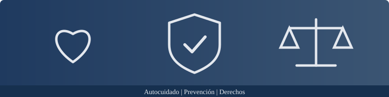

|
Autocuidado, prevención y derechos Proyecto Interdisciplinario · Luis Navarro · 2.º Técnico · Unidad Educativa San Esteban |
Inicio | Autocuidado | Prevención | Derechos | Fuentes confiables

Esta página reúne información clara y respaldada por instituciones reconocidas sobre cuatro temas que influyen en la vida de los adolescentes: el autocuidado, la prevención de riesgos, los derechos y el uso de fuentes confiables. Fue elaborada por Luis Navarro, estudiante de segundo año de bachillerato técnico de la Unidad Educativa San Esteban.
Autocuidado: hábitos para cuidar el cuerpo, las emociones y las relaciones.
Prevención: principales riesgos de la adolescencia y formas de evitarlos.
Derechos: lo que establecen la Convención sobre los Derechos del Niño y la Constitución del Ecuador.
Fuentes confiables: instituciones consultadas y criterios para reconocer información segura.
El proyecto de vida es la planificación de lo que una persona desea lograr en el futuro: sus estudios, su trabajo, su familia y sus aportes a la sociedad. Alcanzar esas metas requiere salud, decisiones responsables y el conocimiento de los propios derechos; por eso los temas de esta página forman parte de él.
Preguntas para empezar a construirlo:
Toda persona merece un trato digno, sin importar su origen, género, condición económica, discapacidad o creencias. Cuidarnos a nosotros mismos incluye respetar a los demás y rechazar cualquier forma de discriminación.
Elaborado por Luis Navarro · 2.º Técnico · Unidad Educativa San Esteban. Información tomada de la OMS, del Ministerio de Salud Pública del Ecuador y de UNICEF Ecuador.